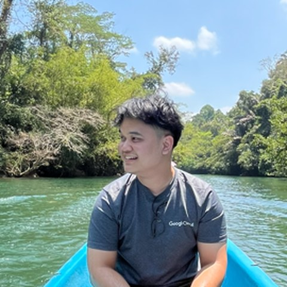

Muhammad Lutfi
Software Engineer · @lutfidev
I am a Computer Science graduate of BINUS University, currently working as Network Operations Center (NOC) staff at an FTTH internet service provider in Batam, where I monitor PPPoE subscribers and bandwidth queues on MikroTik and coordinate fault resolution with field technicians. My background is in software development (web, mobile, and VPS deployment), and I am now deepening my skills in networking and web security.
I'm always open to connecting, collaborating, and sharing ideas with people who are passionate about building impactful digital innovations.
Experience
-
Jul 2026 – Present
Network Operations Center (Freelance)
PT Informasi Nusantara Teknologi
Monitor the real-time performance of the FTTH network across Batam service areas. Analyze PPPoE sessions and MikroTik Simple Queue usage to find slow connections, bandwidth bottlenecks, and disconnected customers; triage complaints, coordinate fixes with field technicians, and prepare network performance reports.
-
Aug 2025 – Jan 2026
Front-End & Back-End with AI (Intern)
ASAH · Dicoding × Accenture
Capstone: built Acadion with a team of five, an academic dashboard that brings the whole capstone process into one system. Students pick use cases, form and validate teams, manage worksheets, and give 360-degree feedback; admins manage use cases, content, and student records and validate submissions in real time.
-
Apr – Jul 2024
Frontend Developer
OneByOne Logistical Pty Ltd
Refactored the client-facing Microlistics MLS Web Portal, breaking monolithic components into reusable modules and improving load times, responsiveness, and overall UI quality.
-
Jan – Jul 2023
Mobile Developer (Intern)
PT PLN Batam
Designed and delivered Monitor Agenda, a production-ready Flutter app for monitoring the Board of Directors' agenda, built for the corporate secretariat.
Education
-
2024 – 2026
S1 Computer Science
BINUS University
IPK: 3.80 / 4.00
-
2020 – 2023
D3 Application Software Engineering
Telkom University
IPK: 3.69 / 4.00